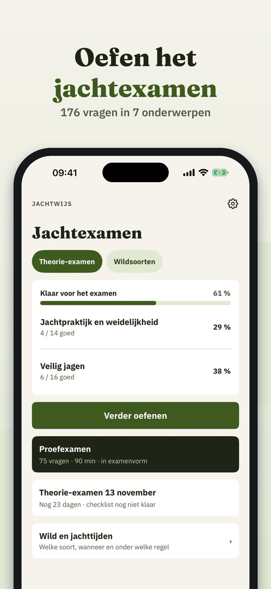
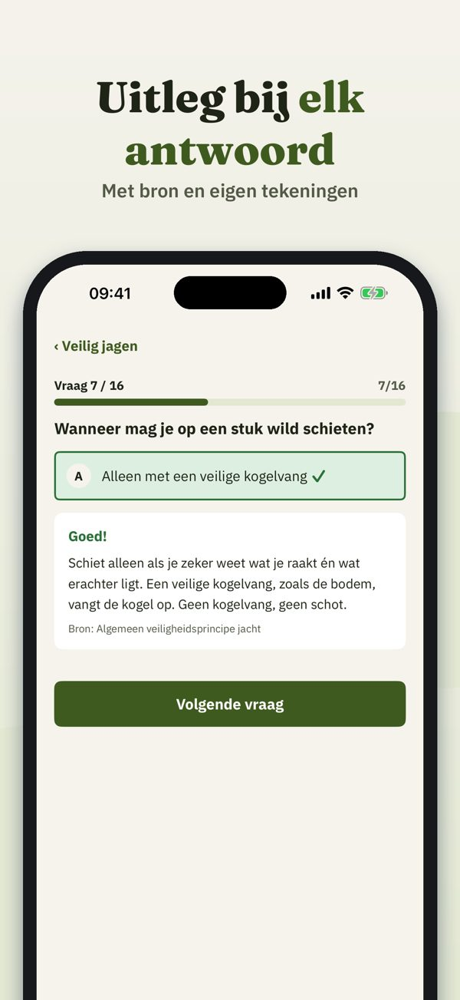
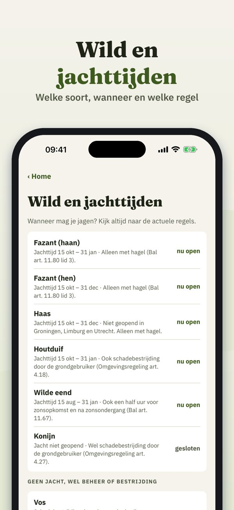

Oefen voor je jachtakte
Oefen het theoretisch jachtexamen: vragen met uitleg en bron, proefexamens, wildsoorten en jachttijden – in het Nederlands en zonder internet.



Jachtwijs helpt je oefenen voor het theoretisch jachtexamen – met wildsoorten, jachttijden, wetgeving en veilig schieten.
Je kunt 20 vragen, de begrippenlijst, de jachttijden en de checklist zonder aankoop gebruiken. De volledige versie is een eenmalige aankoop. Geen abonnement.
Jachtwijs is onafhankelijk en niet verbonden aan een examenorganisatie, de politie of de overheid. Het examen doe je bij de examenorganisatie.
Terms of Use (EULA): https://www.apple.com/legal/internet-services/itunes/dev/stdeula/
Privacy: https://baytechbv.github.io/privacy/jachtexamen-nl/